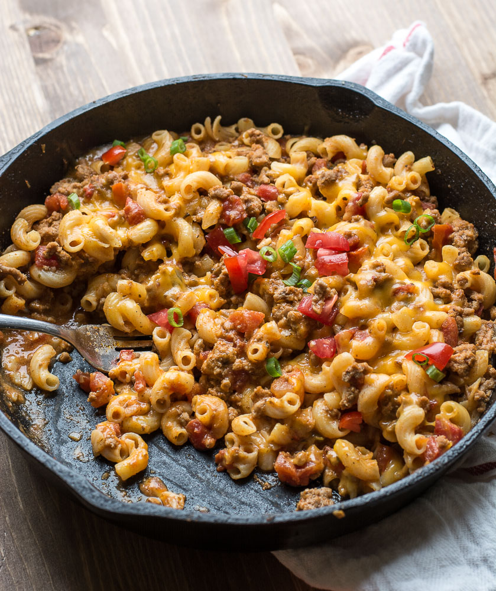

Taco Mac and Cheese

Description:
My Grandpa on my Father's side happened to be a red-seal Chef, so you
can bet a lot of that skill was passed down to him. So it is safe to say
I have had a plethora of good cooking knowlede bestowed upon me growing up.
My Dad's cooking style differed from my Mom's in the way that he threw whatever
the hell looked like it goes together in a pot or pan and improvised along the way.
I will say this style of cooking is fantastic for creating some very interesting
dishes, which is how this one was born.
It is a quite simple dish, nothing impressive, but it is incredibly filling,
comforting, and easy to make. This is something you could eat all day, everyday,
no matter the weather, and is sure to turn a bad day good, at least for the
duration of the meal!
It's basically a mac and cheese recipe, using a basic roux as the base, with
a lot of taco seasoning added, some ground beef, and some veggies (depending
on what you like). Dad always called it a ghoulash growing up, but I just like
to call it Taco Mac.
Ingredients:
Cheese Sauce:
- 2 tbsp Butter
- 2 tbsp Flour
- 2 cups Milk
- Shredded Cheddar Cheese
- Salt
- Pepper
Pasta:
- Butter
- Chili Oil
- Macaroni
- 1 lb Ground Beef
- Frozen Corn
- Diced Roma Tomatos (Optional)
- Salt
- Pepper
- Garlic Powder
- Onion Powder
- Chili Flakes
- Chili Powder
- Cumin Powder
- Paprika
- Oregano
Topping:
- Shredded Cheddar Cheese
- Panko Bread Crumbs
- Parmesan Cheese
- Butter
Directions:
- Preheat oven to 350 degrees Fahrenheit.
- Boil a large pot of water. Season with salt and add macaroni.
- Melt butter in a pan. Add chili oil. Add ground beef and cook on medium-low until
browned.
- Season beef generously with salt, pepper, garlic powder, onion powder,
chili flakes, chili powder, cumin powder, paprika and oregano. Add
a splash of water and simmer on low.
- While beef is simmering, add frozen and corn and diced roma tomatoes.
- Strain pasta, melt some butter to prevent it from sticking and set aside.
- Melt 2 tbsp of butter in a pan over low heat. Add the flour and increase heat
to medium. Mix and cook until it creates a golden-brown paste.
- Add your two cups of milk and simmer until it reaches your desired thickness.
- Add salt, pepper, and shredded cheese to taste (around 2 - 3 cups).
- Add pasta to pan with beef and mix. Add cheese sauce to desired
sauciness.
- Add pasta mixture to a ceramic baking dish.
- Melt butter in a bowl. Mix in parmesan, shredded cheese, and panko
bread crumbs.
- Add topping to the mac and cheese. Bake until golden brown.